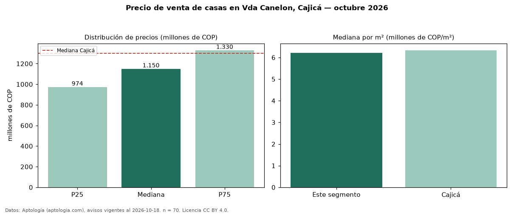

Precio de venta de casas en Vda Canelon, Cajicá — octubre 2026
En Vda Canelon, Cajicá, la mediana de precio de venta de casas es COP 1,15 mil millones, según 70 avisos vigentes. Frente a la mediana de Cajicá para casas (COP 1,30 mil millones), queda 12 % por debajo. Por metro cuadrado, la mediana es COP 6,21 millones/m² (n = 70 avisos con área), 2 % por debajo de Cajicá (COP 6,33 millones/m²). Por precio mediano es el puesto 9 de 10 barrios de Cajicá con al menos 30 avisos de casas en venta (COP): entre las más económicas. El área mediana anunciada es 182 m². El segmento con más oferta es el de 3 o más habitaciones (69 avisos, mediana COP 1,15 mil millones). La administración mediana declarada es COP 1,00 millones al mes (n = 49). El estrato más frecuente es 4 (50 % de los avisos con estrato). Datos: Aptología (aptologia.com), CC BY 4.0 — https://www.aptologia.com/casas-en-venta/cajica/vda-canelon. Archivos: PDF, CSV con las cifras y gráfica PNG.

| Avisos únicos | 70 |
|---|---|
| Percentil 25 | COP 974.000.000 |
| Mediana | COP 1.150.000.000 |
| Percentil 75 | COP 1.330.000.000 |
| Mediana por m² | COP 6.207.278 |
Fuente: avisos vigentes de portales inmobiliarios recopilados por Aptología, deduplicados (mínimo 30 avisos únicos por celda). Precios pedidos, no cerrados. Fecha: 2026-10-18.